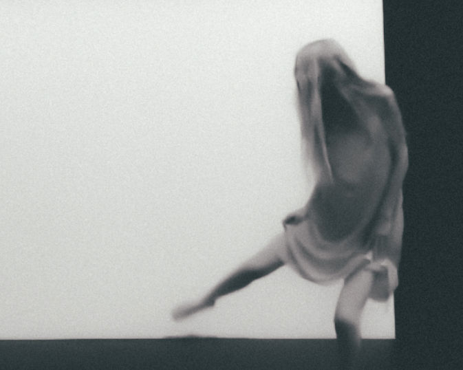
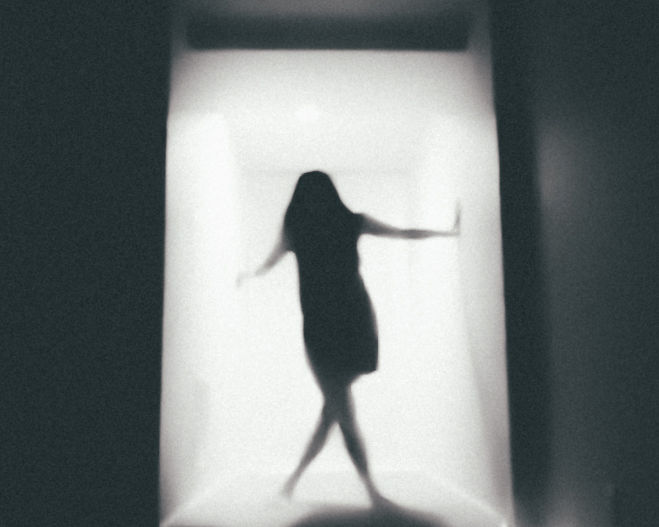
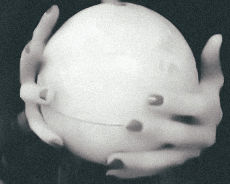

Bio
Born in El Paso, Texas and raised in Juarez, Mexico - Valeria Y. Gonzalez is an entrepreneur, director, producer, dancer, choreographer, and women empowerment advocate. She began her professional dance journey by working with Ballet Master Hector Hernandez in Guadalajara, Mexico, then was offered a scholarship to attend the Ballet Divertimento dance program in Montreal, Canada. She continued her studies in New York at the Alvin Ailey School while simultaneously attending several dance intensives such as: Gaga in Tel Aviv, Movement Invention Project, SBDNY Module, B12, TL Collective, Szalt, Gallim Dance, Vim Vigor, and Pirouetteando. As a performer, Valeria has performed works by Gioconda Barbuto (Nederlands Dans Theater), MADBOOTS, David Pressault (Toronto Dance Theater), Eric Miles (Les Ballet Jazz De Montreal), Pamela Pietro (NYU Tisch), and more.
In addition to dance, Valeria also pursued a career in Communications and TV Production at the New York Institute of Technology (NYIT) where she was exposed to several aspects of Film, Visual Arts, Production, and Photography. Upon graduation, she worked full-time for NBC News New York local news as an Associate Producer.
With the dream of finding a safe place that feels like home, and a community where women can be themselves unapologetically, Valeria Gonzalez decided to take action by founding VALLETO in 2014. Her unique view and inquiry in gender equality, freedom of expression, sexism, and diversity were crucial to starting her dance company. VALLETO is now an organization that focuses on the empowerment of women through contemporary dance, performances, collaboration, community projects, education, and activism. VALLETO has been chosen to be part of dance residencies and festivals such as SMUSH, APEX Peridance, HERE Arts Theater, UTEP, NYU Tisch, and more.
Valeria's movement language describes femininity, tension, intimacy, impulse, raw emotions, and self-awareness. VALLETO has gained recognition internationally for its collection of works, and the continued projects in collaboration with dance artists, composers, photographers, costume designers, and filmmakers from all over the globe.
In 2016 she was accepted into the Graduate Dance Program at NYU Tisch School of the Arts where she completed her MFA in Dance with a concentration in Performance and Pedagogy in 2018.
In 2019, she founded the VALLETO NYC Summer Intensive with the mission to unify emerging choreographers, and provide exceptional training to future dance artists. As a passionate educator, Valeria plans to extend this program to more communities in other cities.
Valeria was a Lecturer of Dance at University of Texas at El Paso Dance and Theater Department from 2019-2021, and simultaneously studied and graduated from the Women and Gender Studies Certificate Program at UTEP.
In 2020, she founded VALLETO Heal with the mission of creating a safe platform for women. VH is a place to inspire women to unleash their truest power, and find their unapologetic voice in the face of life, or any situation. VALLETO Heal sessions are full of embodied workshops, deep real-talk conversations, projects, and retreats that empower women in every aspect of their life.
Valeria is now based in Miami, Florida where she will continue to create work, teach, and choreograph.
Teaching
Valeria's workshops and contemporary classes cultivate a safe space for exploration, breakthroughs, intimacy, community and risks. Her class is focused on exploring new movement dynamics of the body while acknowledging the psyche of each dancer to find freedom in the uncomfortable. Her movement focuses strongly on intention, sensations and individual input. This class will provide the dancers with a variety of improvisational methods inspired by contemporary dance and acting techniques through a structure of task oriented exercises, movement research, movement phrase material, and an open discussion.
From Val:
"My teaching philosophy stems from my passion for dance and human connection. I aim to connect with the student, and give them space to explore their bodies through movement. My work is process oriented, and it starts from building a student-teacher relationship, in which the student can feel completely safe to make mistakes, and learn from them. My classes allow the student to question, and to be curious about their anatomies. I always ask the dancers: how do you relate to the world as an artist?I aim to create not only dancers with correct technique, but artists who recognize their own voice and authentic self..."
Testimonial
"Valeria pushed me to places emotionally and physically that I normally shy away from, but in the most honest and safe way where I felt entirely supported by everyone in the studio. She created a safe space from day one, and set the tone of honesty to all of us having a deeper connection and conversation every day. Her movement practices feed on the energy of the room, riding the impulse of where to push us next. Nothing she did was predictable and I love that. Instead of feeling like her (or any of the teachers) were 'at the front of the room' I felt like we were on a journey together, growing together, and sharing ideas."
-Intensive Participant
VALLETO
VALLETO, founded in 2014, is an organization that focuses on the empowerment of women through contemporary dance, performances, collaboration, community projects, education, and activism. VALLETO is led by Mexican American choreographer Valeria Valleto. Her inquiry in gender equality, freedom of expression, sexism, and diversity were crucial to founding VALLETO, and subsequently making it an all-female dance company.
VALLETO is a dance community of strong, radical, and unique women who aspire to make a difference in the dance world.
Our core values include: Safety, Inclusivity, Movement Research, Empathetic Listening, Communication, Fun, Integrity, Honesty, Playful Exploration, and Respect.


Our MISSION is to INSPIRE, to bridge the divides between cultures, to empower women, to create exceptional dance training workshops, to create touching, moving and extraordinary dance performances, initiatives, dance workshops, and events that leave a transformative experience. Our VISION is an extraordinary repertoire of innovative dance performances, and a global community of dancers and artists who create a radical positive difference for WOMEN.

Visit our website!